Hello, World!
Gabriel here.
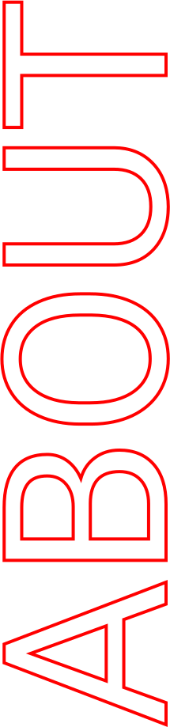
I'm a graphic
designer and web developer. My style is clean, accessible, and direct.
I’m here to
understand your goals and translate those into fresh, new graphics and web experiences. An intuitive, efficient, and
beautiful website can set you apart and take you to the next level. That’s what I am here to help
you do.
My design process begins with traditional sketching and ideation, followed by digital execution using industry-standard tools like Figma and Illustrator. For web development, I specialize in content management systems (CMS) such Wordpress and Ghost, as well as flat-file systems like Kirby and Grav.
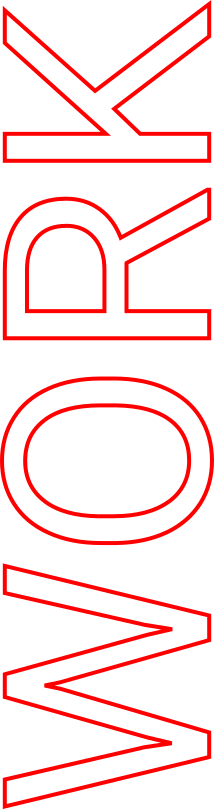
Bischu
Web Development
Bischu is a skilled graphic designer who creates a diverse range of visual solutions, from comprehensive corporate identity packages to dynamic brand videos and eye-catching logos.
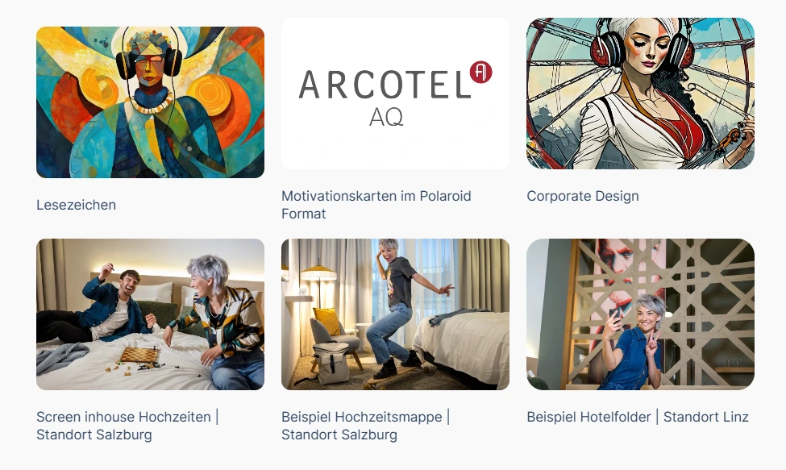
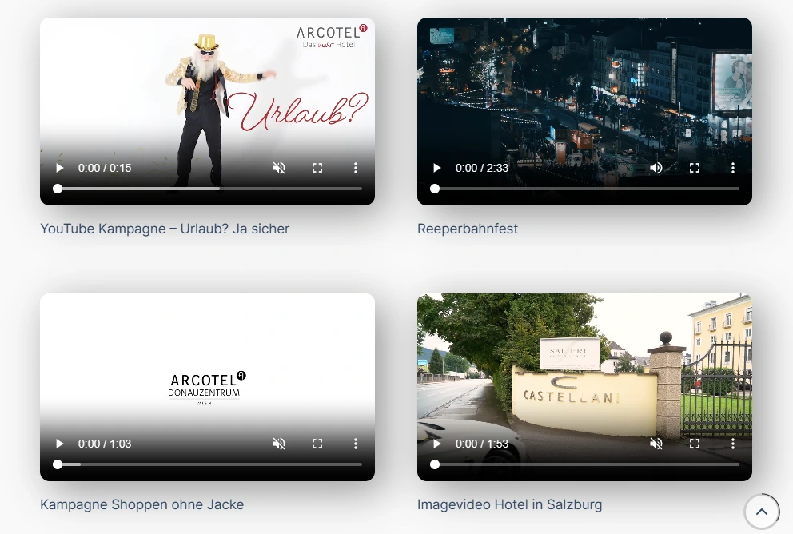
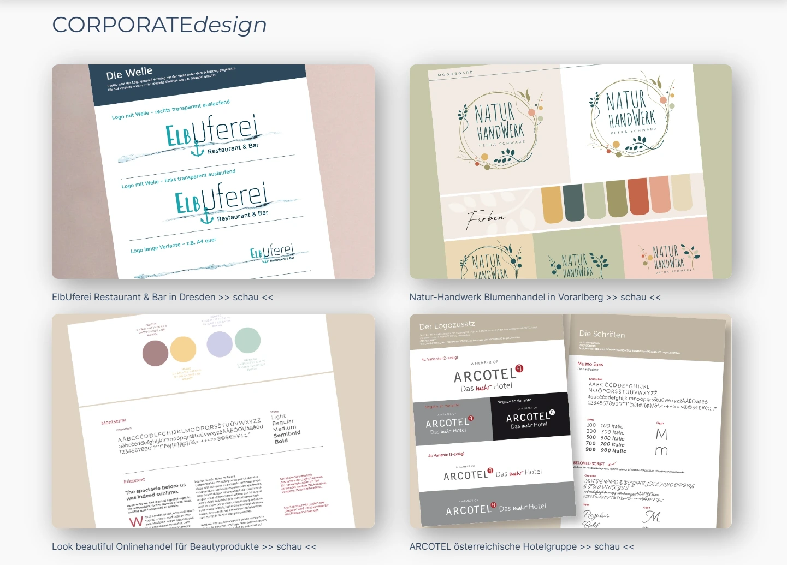
Jawerth Group
Web Development
Research in the Jawerth Group focuses on using principles from soft condensed matter physics to understand important biological materials.
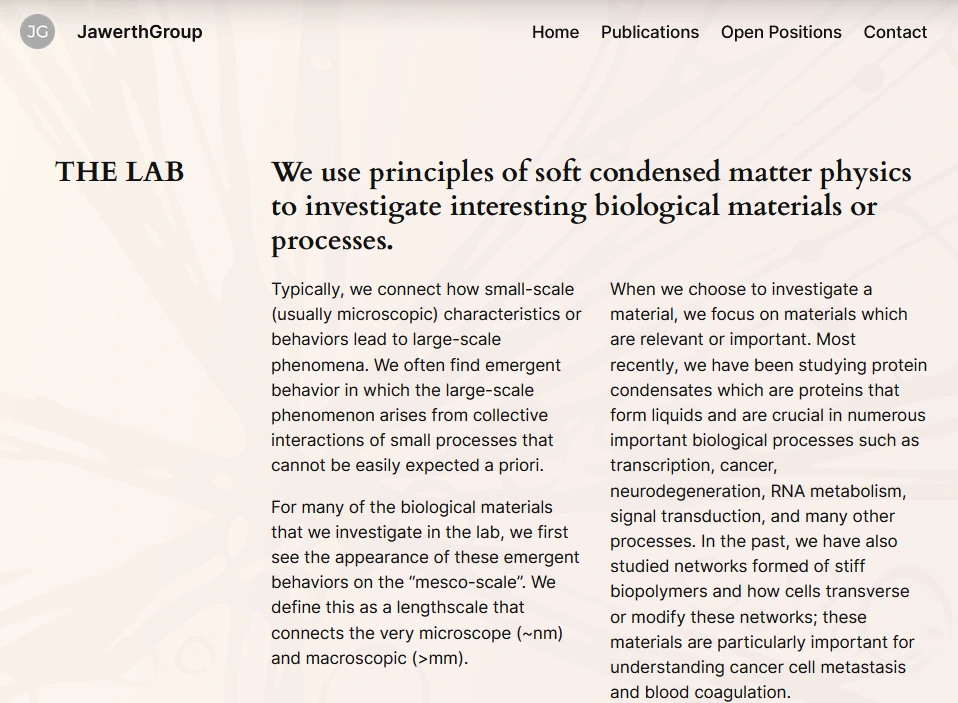
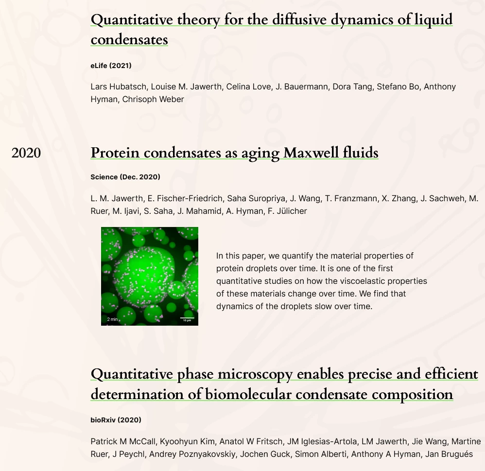
EUROPIFY
Web Development
Europify is an independent institute specialising in European Studies. It focuses on the areas of European education and integration.
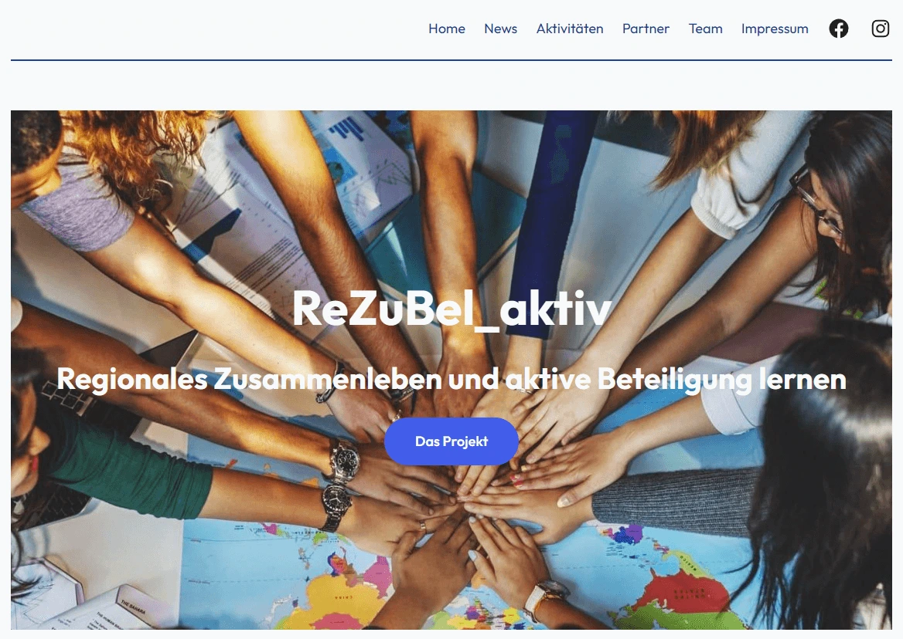
Kerstin of Sweden
Web Development
Kerstin of Sweden is the digital home of a Swedish artist living in Florida, who traded her tech suit for an apron and a paintbrush.
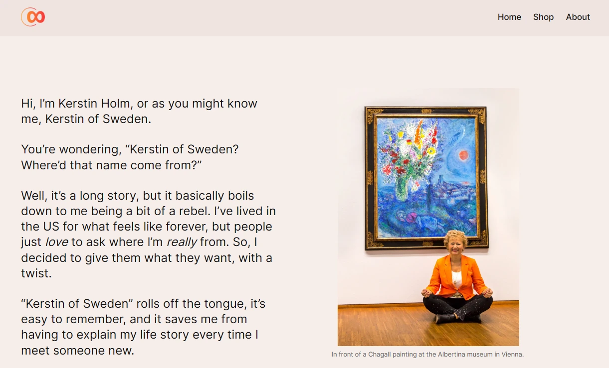
Whoosh
Logo Variations
Whoosh is a start-up that uses urban interventions to make important new connections across the city of Vienna, Austria. Read about the making of the logo in this blog post.
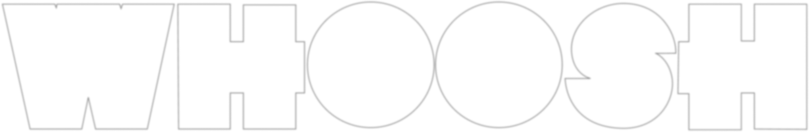
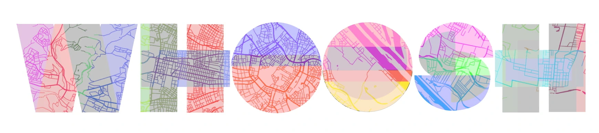
WIKIPHILO
Flyers
WIKiPhilo is an independent institute focused on nurturing curiosity and self-discovery in children and young adults.
Read about how I designed the flyers and posters.
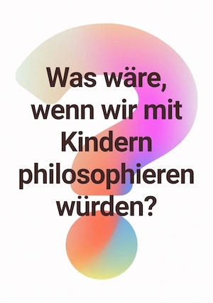
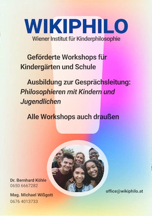
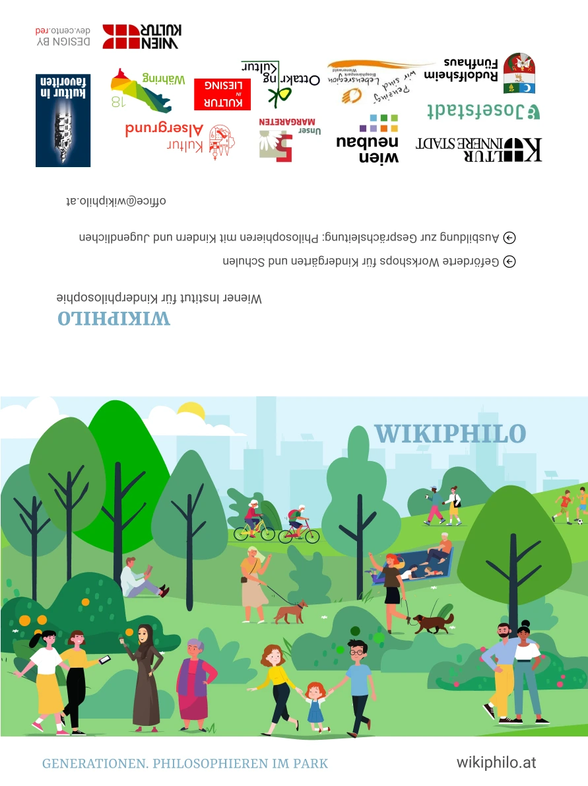
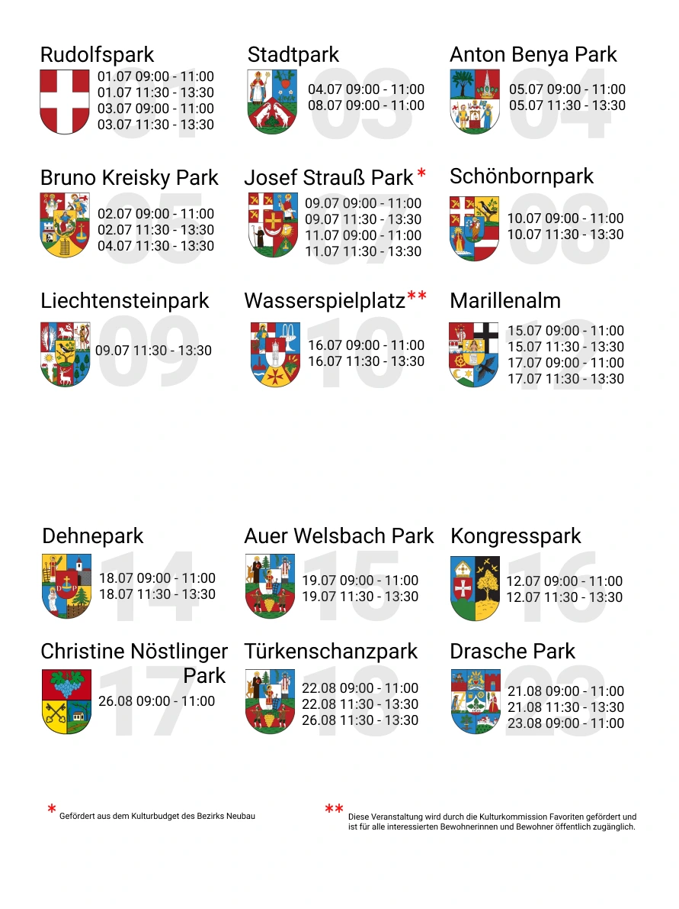
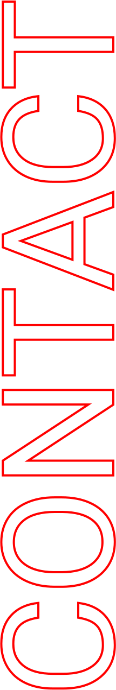